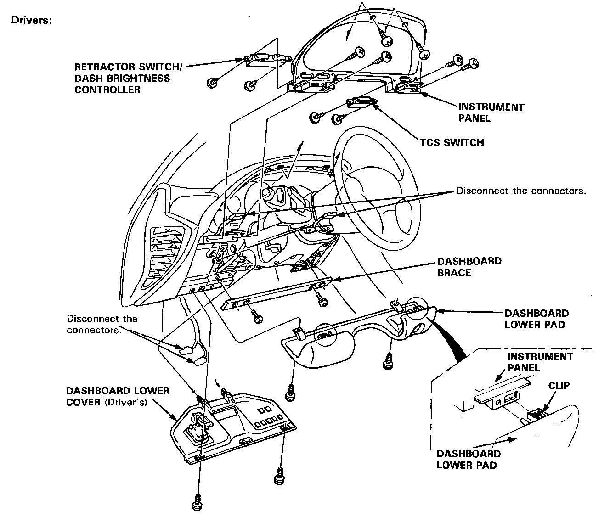
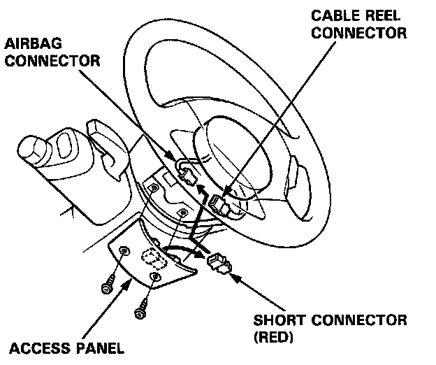
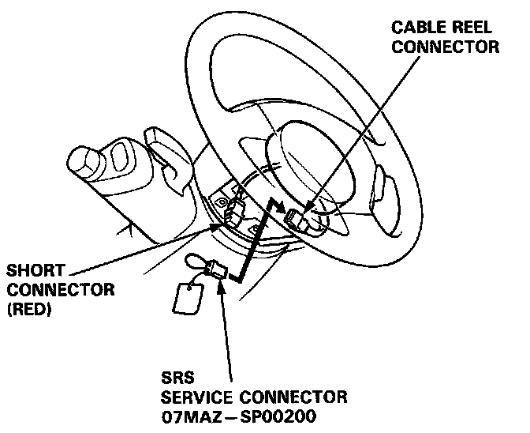
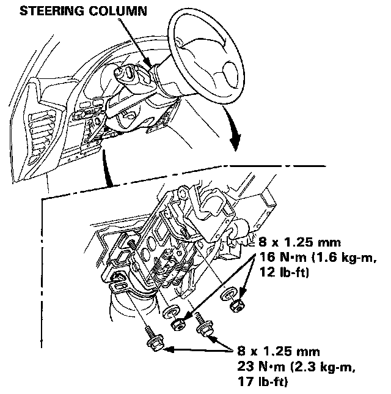

Instrument Cluster / Carrier: Service and Repair

NOTE: Take care not to scratch the dashboard, steering column and related parts.
CAUTION: When prying with a flat tip screwdriver, wrap it with protective tape or a shop towel to prevent damage.
Installation is the reverse of the removal procedure.
NOTE: Make sure the connectors are connected properly.
Replacement
SRS components are located in this area. Review the SRS component locations, precautions, and procedures in the SRS.
1. To remove the dashboard, first remove the Seats.
- Dashboard lower cover (Driver's)
- Dashboard lower pad
- Dashboard brace
- Center armrest
- Clock, center air vent and console panel
- Climate control unit and stereo cassette/radio
- Dashboard lower cover (Passenger's)
- Glove box lid and glove box
2. Lower the steering column.
To avoid accidental deployment and possible injury always install the short connector on the airbag connector when the SRS wire harness is disconnected.

NOTE
- Remove the access panel, then remove the short connector (RED). Disconnect the connector between the airbag and cable reel, then connect the short connector (RED) to the airbag connector.

- Connect the special tool to the cable reel connector.

NOTE: To prevent damage to the steering column, wrap it with a shop towel